C · Map / NPC / Outposts
batch 1 · 2026-10-03 · 14 pages · 1080×2400 screenshots scaled to 360 wide
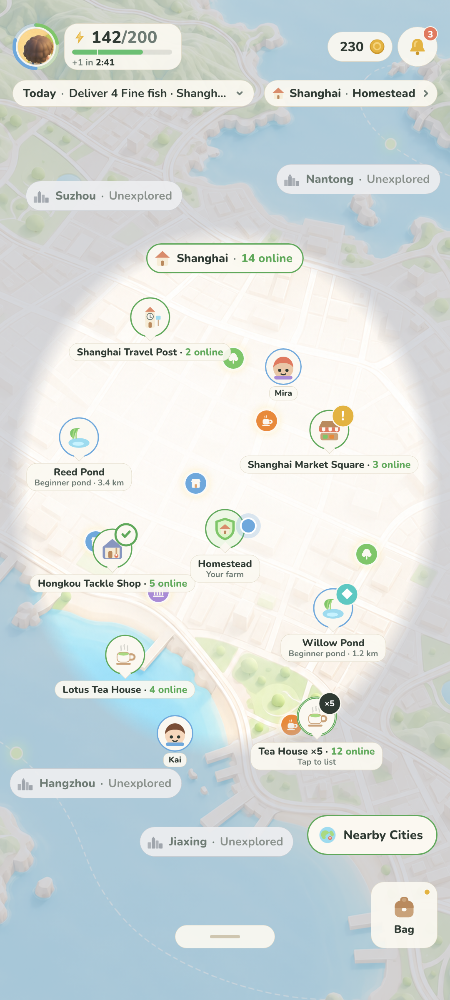
C01 · MAP-1ui/batch1/MAP-1.html
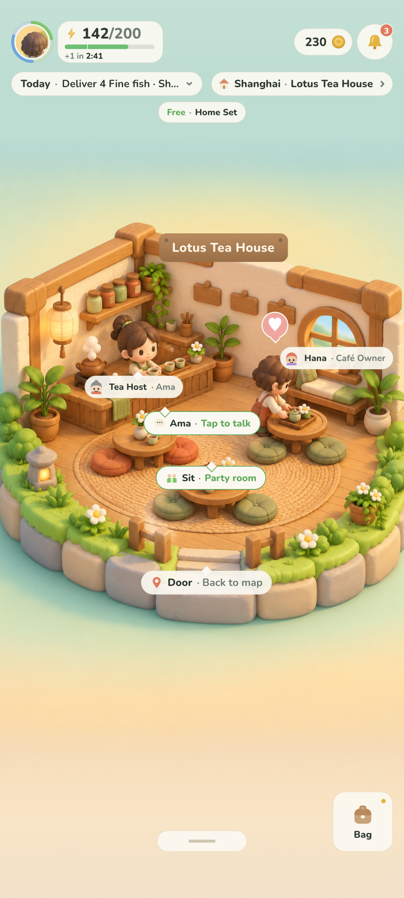
C02 · NPC-1aui/batch1/NPC-1a.html
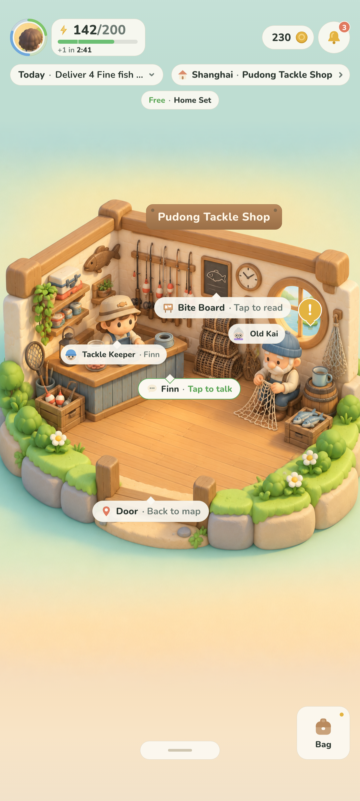
C03 · NPC-1bui/batch1/NPC-1b.html
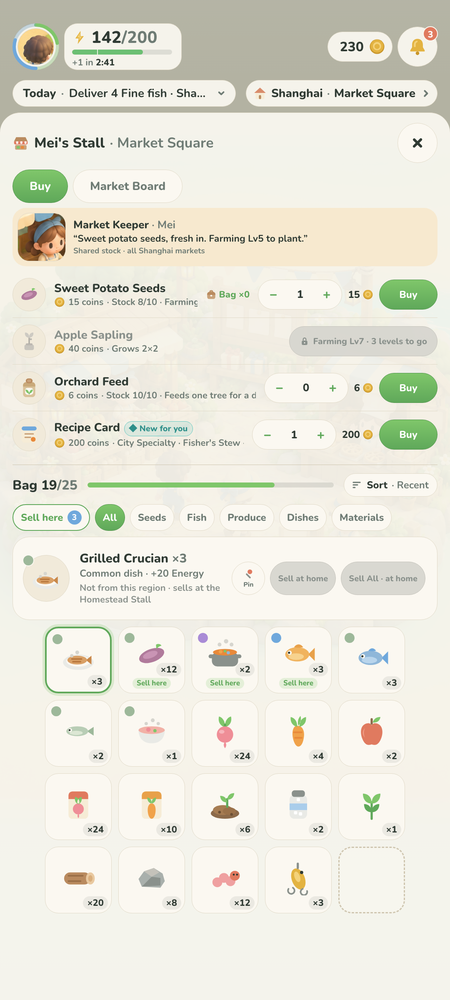
C04 · NPC-2ui/batch1/NPC-2.html
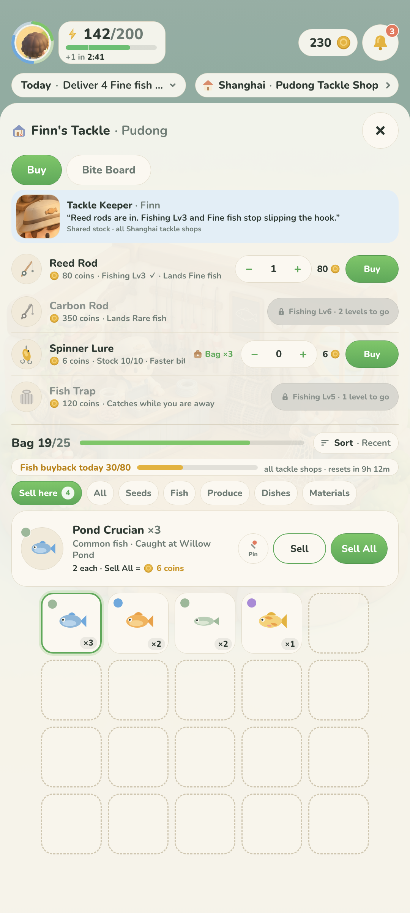
C05 · NPC-2-2ui/batch1/NPC-2-2.html
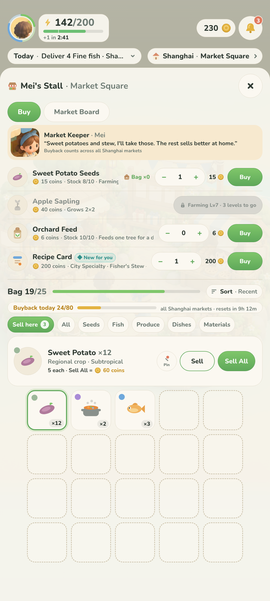
C06 · NPC-3ui/batch1/NPC-3.html
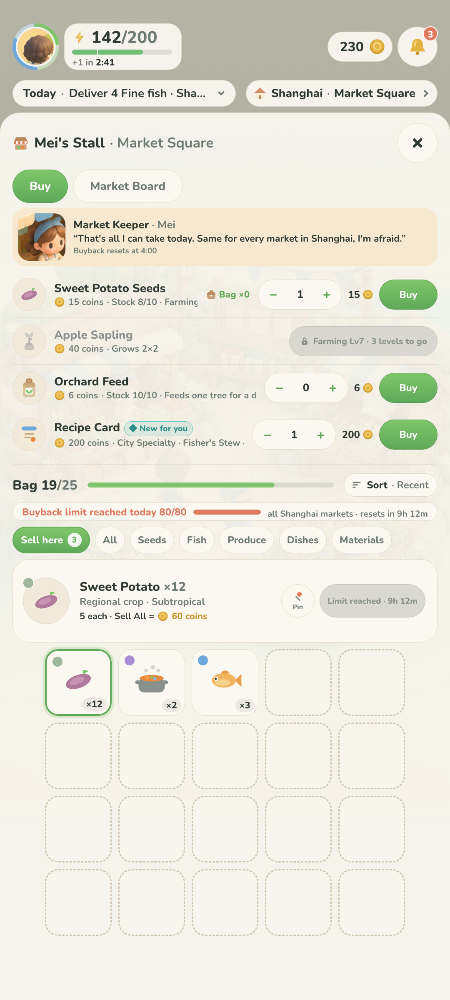
C07 · NPC-3-2ui/batch1/NPC-3-2.html
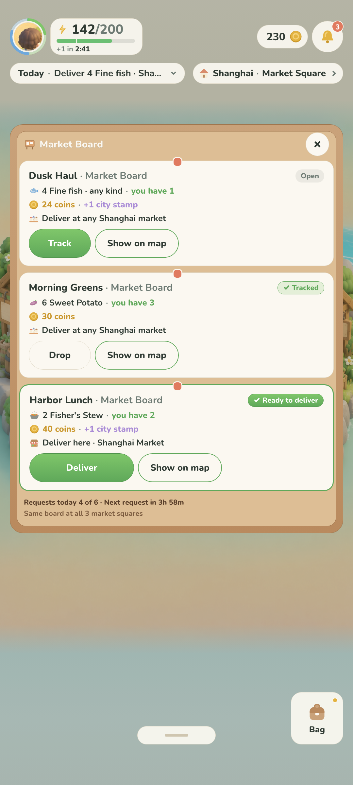
C08 · NPC-4ui/batch1/NPC-4.html
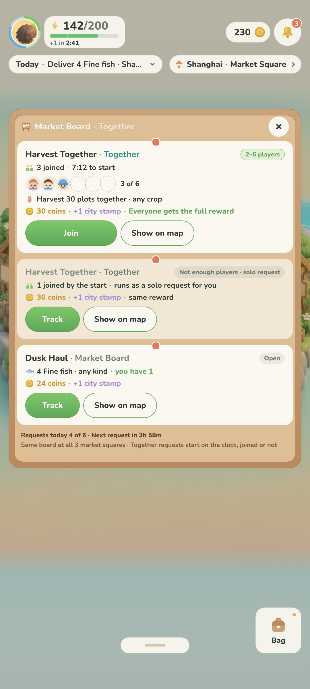
C09 · NPC-4-2ui/batch1/NPC-4-2.html
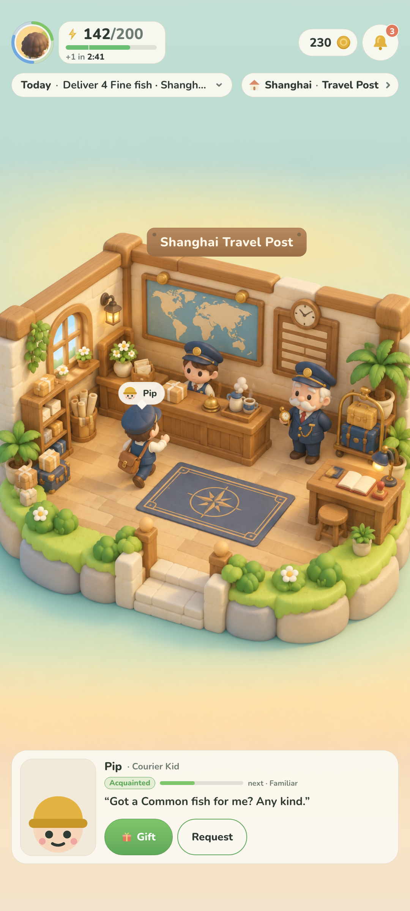
C10 · NPC-5ui/batch1/NPC-5.html
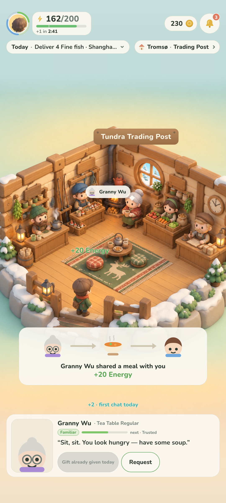
C11 · NPC-5-2ui/batch1/NPC-5-2.html
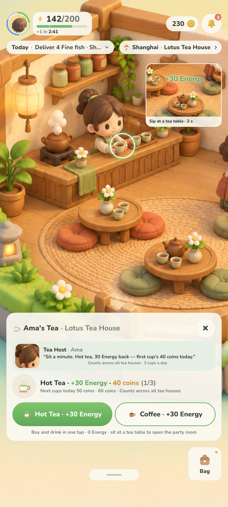
C12 · NPC-6ui/batch1/NPC-6.html
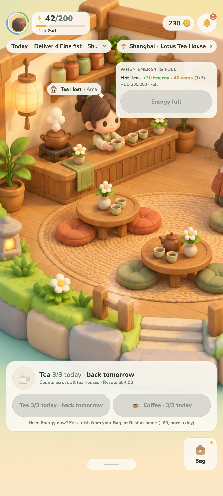
C13 · NPC-6-2ui/batch1/NPC-6-2.html
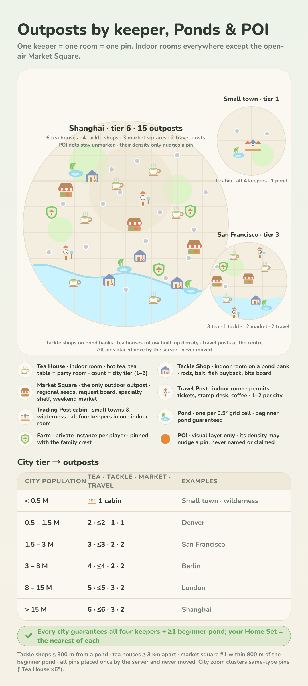
C14 · OUTPOST-DIAGRAMui/batch1/OUTPOST-DIAGRAM.html